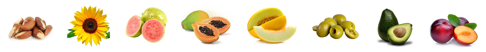
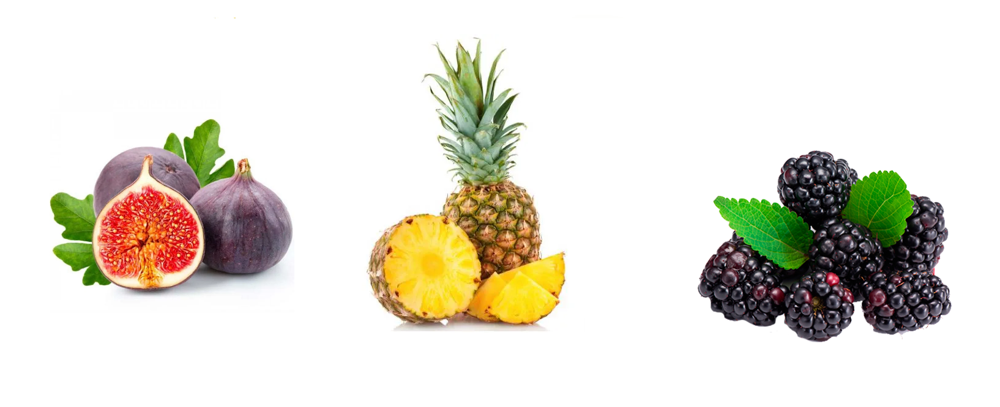

FRUTAS OU FRUTOS?
O termo fruta é uma designação popular para o fruto comestível de certas plantas, geralmente doce ou azedo, e que pode ser consumido cru. Ela é rica em vitaminas, minerais e fibras, sendo parte fundamental de uma dieta saudável.
Vale ressaltar que basicamente toda fruta é um fruto, mas nem todo fruto é uma fruta. Ficou confuso? Entenderemos esses dois conceitos logo a seguir.
O que são frutos?
O fruto é a estrutura carnosa das plantas angiospermas que se desenvolve a partir do ovário, após a fecundação. Ele corresponde ao ovário desenvolvido da flor e com sementes maduras. Os frutos atuam como um envoltório protetor das sementes.
As funções do fruto são:
- Proteção da semente em desenvolvimento;
- Em alguns casos, auxilia na dispersão da semente;
- Promove a propagação e perpetuação da espécie.
Tipos de frutos
Simples
Os frutos simples são originários de um só ovário e de uma única flor. Exemplos: tomate e cereja. Os frutos simples podem ser do tipo seco ou carnoso.
Secos: possuem pericarpo pobre em água. As substâncias nutritivas concentram-se na semente. Como exemplo temos a castanha e o girassol.
Carnosos: possuem pericarpo rico em água e substâncias nutritivas. Os frutos carnosos podem ainda ser classificados em Baga (frutos com várias sementes facilmente separadas do fruto, como a goiaba, o mamão e o melão) e Drupa (frutos com semente envolvida por um endocarpo duro, também chamado de caroço, como a azeitona, o abacate e a ameixa).
Agregados
Os frutos agregados são os que se originam de uma flor com muitos ovários separados. Também são denominados de frutos apocárpicos. Exemplo: magnólia.
/i.s3.glbimg.com/v1/AUTH_59edd422c0c84a879bd37670ae4f538a/internal_photos/bs/2018/4/8/vfvejXS2AATs03VRAPcw/magnolia-ovata-fruto-2-.jpg)
Múltiplos (Infrutescência)
Os frutos múltiplos desenvolvem-se de inflorescências, nas quais os muitos ovários fundem-se e formam uma estrutura única. Exemplos: Figo, abacaxi e amora.
Fruto, Fruta e Pseudofruto
Fruto: é o resultado do desenvolvimento do ovário da flor.
Fruta: termo popular empregado para frutos e pseudofrutos comestíveis e de sabor adocicado ou ácido.As frutas são consumidas tanto in natura quanto em sucos, saladas, sobremesas e outras preparações.
Pseudofruto: qualquer estrutura que se assemelhe a um fruto, mas que não seja formada pelo amadurecimento do ovário e sim de outras estruturas da flor como o pedicelo e receptáculo. Exemplos: maçã, pêra, caju.